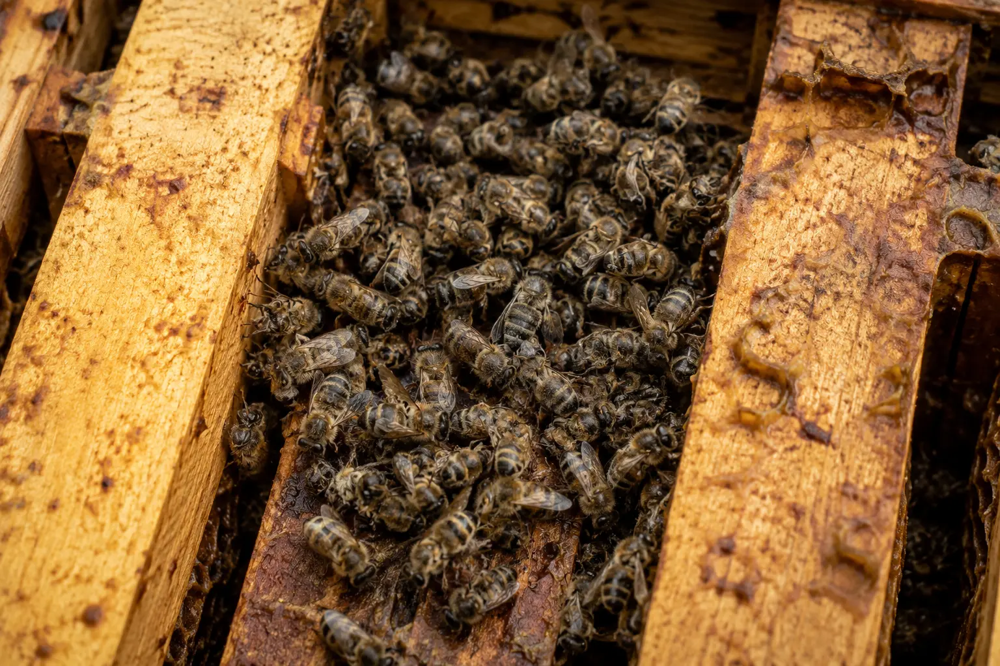

Colony loss diagnosis
Dead Cluster of Bees in the Hive (UK) – Why Bees Die in One Place
Last updated: 1 May 2026

Finding a tight cluster of dead bees inside the hive is a common but upsetting form of colony loss. Unlike an empty hive with no bees, the bees are still present and are often grouped together exactly where they died.
A dead cluster usually means the colony failed while still trying to maintain its winter cluster. The cause is not always “cold” on its own. In many cases, the more important issue is whether the colony had enough bees, enough reachable food, and enough health going into winter.
This guide explains how to read the signs, how to distinguish starvation from isolation starvation, and how this pattern links to winter colony loss, varroa collapse and weak colonies.
What does a dead cluster look like?
A dead cluster is usually found on or between frames, with bees grouped tightly together in one area of the hive. The bees may still be clinging to comb, packed between frames, or positioned around the last brood area.
A common starvation clue is bees head-first in cells. This can happen when bees are trying to reach the last remaining traces of food. You may also find very few bees elsewhere in the hive, because the colony died as a clustered group rather than scattering.
The location of the cluster matters. Check whether food was directly above, beside, or several frames away from the dead bees.
Main causes of a dead cluster
Dead clusters are most often linked to starvation, isolation starvation, cold stress, varroa-related weakness or a colony that went into winter too small. These causes often overlap.
For example, a small colony may be more vulnerable to cold stress and less able to move to food. A varroa-damaged colony may enter winter with too few healthy long-lived bees. A colony with stores in the hive may still die if the cluster cannot reach them during a cold spell.
Starvation
Full starvation means the colony runs out of food. If there are no stores left in the hive, the cluster may die in place because there is nothing available to support heat generation.
Starvation often leaves bees head-first in cells and a tight cluster with little or no food nearby. A very light hive before discovery is another clue.
See the full guide to starvation signs in bees.
Isolation starvation
Isolation starvation is especially important in UK winter losses. It happens when bees die with food still in the hive because the cluster cannot move to reach it.
This can happen during prolonged cold spells, when the cluster is small, or when stores are positioned away from the bees. You may find honey or fondant nearby, but not close enough for the cluster to access without breaking formation.
Read more in the full guide to isolation starvation in bees.
Cold stress
Cold weather alone does not usually kill a well-prepared, healthy colony with sufficient stores. Honey bees are adapted to survive cold by clustering and generating heat.
Cold becomes more dangerous when the cluster is too small, the bees are old or weakened, food is out of reach, or the hive is damp and exposed. In these conditions the colony may not be able to maintain the cluster temperature or move to fresh stores.
Varroa and virus damage
Varroa does not always leave an obvious “dead cluster” clue on its own, but it can weaken the colony before winter. Colonies damaged by varroa and associated viruses may enter winter with too few healthy long-lived bees.
The result can look like a small failed cluster, sometimes with stores still present. The colony may simply not have had the strength to maintain itself through winter.
If the colony was weak in autumn, had signs of deformed wings, patchy brood, poor mite control or late-season decline, compare the loss with varroa collapse signs.
Key clues to identify the cause
Start by checking the cluster location. A dead cluster with no food anywhere suggests starvation. A dead cluster with food nearby but not reached suggests isolation starvation. A tiny cluster with stores present may suggest the colony went into winter too weak or varroa-damaged.
Look at the comb around the bees. Bees head-first in cells often point towards starvation. Damp, mould, mouse damage, wax moth damage or heavy debris may point to additional problems after the colony died.
Use the hive post-mortem analysis guide to work through the hive step by step rather than relying on one sign alone.
When this happens in the UK
Dead cluster losses are most commonly discovered in late winter or early spring, often between January and March. The colony may have died earlier, but the beekeeper usually finds it during a winter check or first spring inspection.
Losses are more likely after prolonged cold spells, poor autumn preparation, inadequate stores, late varroa control, small colonies going into winter, or poor positioning of feed relative to the winter cluster.
This is why late summer and autumn preparation are so important in the year in the apiary.
How to prevent dead cluster losses
Prevention starts before winter. Colonies need enough healthy bees, enough stores and effective varroa control before cold weather arrives. A colony that enters winter weak is already at a disadvantage.
Make sure winter food is available where the cluster can reach it. In late winter, fondant placed above the cluster can be more useful than food several frames away. Hefting through winter helps identify colonies that are becoming light.
Good autumn management, appropriate feeding, timely varroa treatment and winter checks all reduce the risk of finding a dead cluster later.
What to do after finding a dead cluster
Do not immediately clear everything away without looking carefully. First, record where the bees died, whether food was present, whether bees were head-first in cells, whether the cluster was large or small, and whether there were signs of damp, pests or disease.
Remove dead bees and assess the comb. Equipment may be reusable if there are no signs of notifiable disease, but old comb, mouldy comb or contaminated material should be dealt with sensibly.
Then review the colony history. Check autumn feeding, varroa treatment timing, colony strength, queen status and winter hefting notes so the loss can inform future management.
Dead Cluster of Bees FAQ
Bees often die in a tight cluster when they fail during winter. Common causes include starvation, isolation starvation, cold stress, varroa-related weakness or the colony going into winter too small.
Yes. This is called isolation starvation. The cluster may die with food nearby if cold conditions prevent the bees from moving across the comb to reach it.
No. Cold can contribute, but a dead cluster is often linked to lack of reachable food, small colony size, varroa damage or poor winter preparation.
Check where the cluster died, whether food was present or nearby, whether bees were head-first in cells, the size of the cluster, signs of disease, damp, mould, varroa symptoms and the colony history before winter.